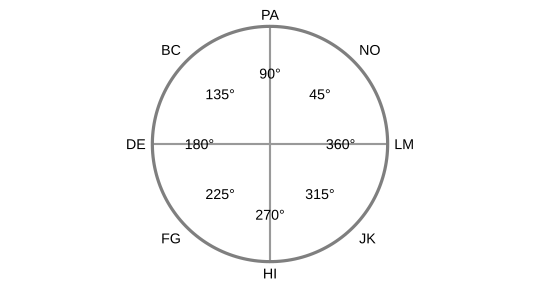
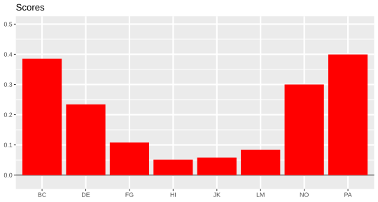
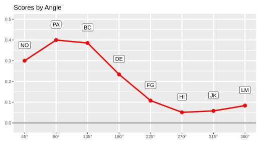
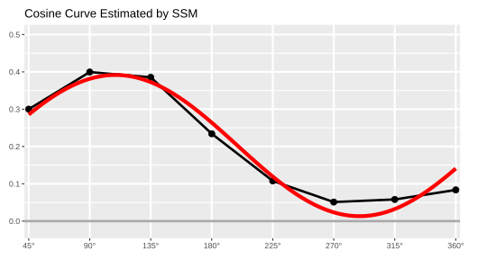
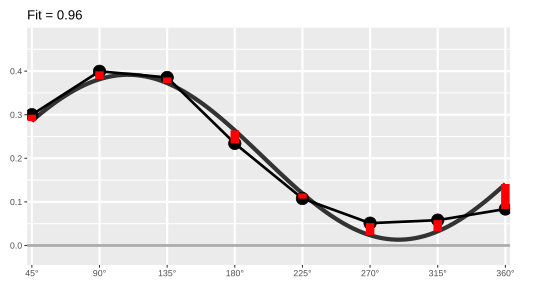
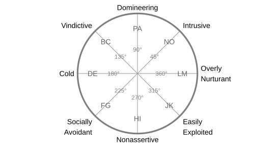
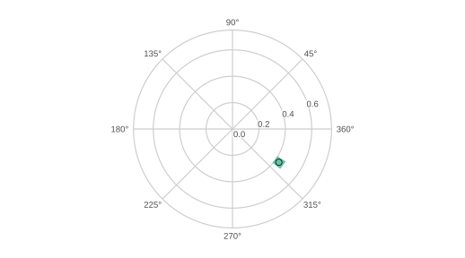
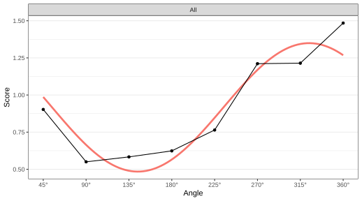
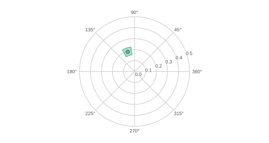
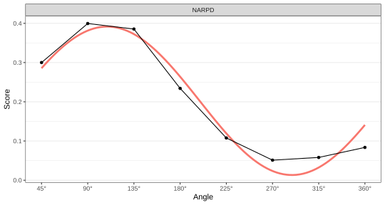

Introduction to SSM Analysis
Source:vignettes/introduction-to-ssm-analysis.Rmd
introduction-to-ssm-analysis.RmdLevel: Introductory. Read “Using Circumplex Instruments” first if your data are item-level responses that still need scoring.
1. Overview
This vignette introduces the Structural Summary Method (SSM) and the
functions that run it. Section 2, “Background and Motivation”, explains
circumplex models, circumplex scales, and the SSM parameters. Section 3,
“Example data: jz2017”, loads the dataset that the examples use. Section
4, “Mean-based SSM Analysis”, runs the SSM on a group’s mean scores with
ssm_analyze(), ssm_table(),
ssm_plot_circle(), and ssm_plot_curve().
Section 5, “Correlation-based SSM Analysis”, runs it on the correlations
between the scales and an external measure. The Wrap-up lists what the
page covered and names the next page, and the References list the
sources cited.
2. Background and Motivation
Circumplex models, scales, and data
Circumplex models are popular within many areas of psychology because they offer a parsimonious account of complex psychological domains, such as emotion and interpersonal functioning. This parsimony is achieved by understanding phenomena in a domain as being a “blend” of two primary dimensions. For instance, circumplex models of emotion typically represent affective phenomena as a blend of valence (pleasantness versus unpleasantness) and arousal (activity versus passivity), whereas circumplex models of interpersonal functioning typically represent interpersonal phenomena as a blend of communion (affiliation versus separation) and agency (dominance versus submissiveness). These models are often depicted as circles around the intersection of the two dimensions (see figure). Any given phenomenon can be located within this circular space through reference to the two underlying dimensions (e.g., anger is a blend of unpleasantness and activity).
Circumplex scales contain multiple subscales that attempt to measure different blends of the two primary dimensions (i.e., different parts of the circle). Although there have historically been circumplex scales with as many as sixteen subscales, it has become most common to use eight subscales: one for each “pole” of the two primary dimensions and one for each “quadrant” that combines the two dimensions. In order for a set of subscales to be considered circumplex, they must exhibit certain properties. Circumplex fit analyses can be used to quantify these properties.
Circumplex data is composed of scores on a set of circumplex scales for one or more participants (e.g., persons or organizations). Such data is usually collected via self-report, informant-report, or observational ratings in order to locate psychological phenomena within the circular space of the circumplex model. For example, a therapist might want to understand the interpersonal problems encountered by an individual patient, a social psychologist might want to understand the emotional experiences of a group of participants during an experiment, and a personality psychologist might want to understand what kind of interpersonal behaviors are associated with a trait (e.g., extraversion).

The Structural Summary Method
The Structural Summary Method (SSM) is a technique for analyzing circumplex data that offers practical and interpretive benefits over alternative techniques. It consists of fitting a cosine curve to the data, which captures the pattern of correlations among scores associated with a circumplex scale (i.e., mean scores on circumplex scales or correlations between circumplex scales and an external measure). By plotting a set of example scores below, we can gain a visual intuition that a cosine curve makes sense in this case. First, we can examine the scores with a bar chart ignoring the circular relationship among them.

Next, we can leverage the fact that these subscales have specific angular displacements in the circumplex model (and that 0 and 360 degrees are the same) to create a path diagram.

This already looks like a cosine curve, and we can finally use the SSM to estimate the parameters of the curve that best fits the observed data. By plotting it alongside the data, we can get a sense of how well the model fits our example data.

Understanding the SSM parameters
The SSM estimates a cosine curve to the data using the following equation: where and are the score and angle on scale , respectively, and , , and are the elevation, amplitude, and displacement parameters, respectively. Before we discuss these parameters, however, we can also estimate the fit of the SSM model. This is essentially how close the cosine curve is to the observed data points. Deviations (in red, below) will lower model fit.

If fit is less than 0.70, it is considered “unacceptable” and only the elevation parameter should be interpreted. If fit is between 0.70 and 0.80, it is considered “adequate,” and if it is greater than 0.80, it is considered “good.” Sometimes SSM model fit is called prototypicality or denoted using .
The first SSM parameter is elevation or , which is calculated as the mean of all scores. It is the size of the general factor in the circumplex model and its interpretation varies from scale to scale. For measures of interpersonal problems, it is interpreted as generalized interpersonal distress. When using correlation-based SSM, is considered “marked” and is considered “modest.”
The second SSM parameter is amplitude or , which is calculated as the difference between the highest point of the curve and the curve’s mean. It is interpreted as the distinctiveness or differentiation of a profile: how much it is peaked versus flat. Similar to elevation, when using correlation-based SSM, is considered “marked” and is considered “modest.”
The final SSM parameter is displacement or , which is calculated as the angle at which the curve reaches its highest point. It is interpreted as the style of the profile. For instance, if and we are using a circumplex scale that defines 90 degrees as “domineering,” then the profile’s style is domineering. Displacement is reported on the circle; a profile that peaks right at the / boundary may be reported as either value, since both point in the same direction.
The figure below draws the curve for the values you choose. Move a slider to change one parameter while the other two stay fixed. The dashed line marks the elevation, and the arrow from it to the peak marks the amplitude. The triangle under the peak marks the displacement. The points show the curve’s value at the angles of the eight scales. When the amplitude is zero, the curve is flat, so it has no peak and the displacement is undefined. Select Reset to return to the starting values.
By interpreting these three parameters, we can understand a profile much more parsimoniously than by trying to interpret all eight subscales individually. This approach also leverages the circumplex relationship (i.e., dependency) among subscales. It is also possible to transform the amplitude and displacement parameters into estimates of distance from the x-axis and y-axis, which will be shown in the output discussed below.
3. Example data: jz2017
To illustrate the SSM functions, we will use the example dataset
jz2017, which was provided by Zimmermann & Wright
(2017) and reformatted for this package. This dataset includes
self-report data from 1166 undergraduate students. Students completed a
circumplex measure of interpersonal problems with eight subscales (PA,
BC, DE, FG, HI, JK, LM, and NO) and a measure of personality disorder
symptoms with ten subscales (PARPD, SCZPD, SZTPD, ASPD, BORPD, HISPD,
NARPD, AVPD, DPNPD, and OCPD). More information about these variables
can be accessed using the ?jz2017 command in R.
data("jz2017")
head(jz2017)
#> Gender PA BC DE FG HI JK LM NO PARPD SCZPD SZTPD ASPD
#> 1 Female 1.50 1.50 1.25 1.00 2.00 2.50 2.25 2.50 4 3 7 7
#> 2 Female 0.00 0.25 0.00 0.25 1.25 1.75 2.25 2.25 1 0 2 0
#> 3 Female 0.00 0.00 0.00 0.00 0.00 0.00 0.00 0.00 0 1 0 4
#> 4 Male 2.00 1.75 1.75 2.50 2.00 1.75 2.00 2.50 1 0 0 0
#> 5 Female 0.25 0.50 0.25 0.00 0.00 0.00 0.00 0.00 0 0 0 0
#> 6 Male 1.50 1.75 2.25 1.75 2.00 1.25 2.25 2.50 5 5 7 5
#> BORPD HISPD NARPD AVPD DPNPD OCPD
#> 1 8 4 6 3 4 6
#> 2 1 2 3 0 1 0
#> 3 1 5 4 0 0 1
#> 4 1 0 0 0 0 0
#> 5 1 0 0 1 0 0
#> 6 4 4 7 2 0 3The circumplex scales in jz2017 come from the Inventory
of Interpersonal Problems - Short Circumplex (IIP-SC). These scales can
be arranged into the following circular model, which is organized around
the two primary dimensions of agency (y-axis) and communion (x-axis).
Note that the two-letter scale abbreviations and angular values are
based in convention. A high score on PA indicates that one has
interpersonal problems related to being “domineering” or too high on
agency, whereas a high score on DE indicates problems related to being
“cold” or too low on communion. Scales that are not directly on the
y-axis or x-axis (i.e., BC, FG, JK, and NO) represent blends of agency
and communion.

4. Mean-based SSM Analysis
Conducting SSM for a group’s mean scores
To begin, let’s say that we want to use the SSM to describe the
interpersonal problems of the average individual in the entire dataset.
We will use the raw scores contained in jz2017, although
note that the results may be more interpretable if we standardized the
scores first (e.g., using the norm_standardize() function
as described in the “Using Circumplex Instruments” vignette).
We can use the ssm_analyze() function to perform the SSM
analysis. The first three arguments to this function are
data (the data frame containing our scores),
scales (a vector of the names or numbers of columns
containing the circumplex scales), and angles (a vector of
the circular angle of each scale, in degrees). Below, I spell out the
names of all the scales and the numbers of all the
angles for teaching purposes. Later on, we will learn some
shortcuts.
results <- ssm_analyze(
data = jz2017,
scales = c("PA", "BC", "DE", "FG", "HI", "JK", "LM", "NO"),
angles = c(90, 135, 180, 225, 270, 315, 360, 45)
)The output of the function has been saved in the results
object, which we can examine in detail using the summary()
function. This will output the call we made to create the output, as
well as some of the default options that we didn’t bother changing (see
?ssm_analyze to learn how to change them) and, most
importantly, the estimated SSM parameter values with bootstrapped
confidence intervals.
summary(results)
#>
#> Statistical Basis: Mean Scores
#> Bootstrap Resamples: 2000
#> Confidence Level: 0.95
#> Listwise Deletion: TRUE
#> Scale Displacements: 90 135 180 225 270 315 360 45
#>
#>
#> # Profile [All]:
#>
#> Estimate Lower CI Upper CI
#> Elevation 0.917 0.890 0.945
#> X-Value 0.351 0.324 0.377
#> Y-Value -0.252 -0.280 -0.223
#> Amplitude 0.432 0.402 0.461
#> Displacement 324.292 320.827 327.766
#> Model Fit 0.878That was pretty easy! We can now write up these results. However, the
circumplex package has some features that can make what we
just did even easier. First, because we organized the
jz2017 data frame to have the circumplex scale variables
adjacent and in order from PA to NO, we can simplify their specification
by using the PANO() shortcut. Second, because the use of
octant scales is so common, we can use the octants()
shortcut. PANO() and octants() return exactly
the same values as the vectors spelled out above, so
results2 below estimates the identical SSM parameters as
results. Its confidence intervals will still differ
slightly, though: ssm_analyze() draws bootstrap resamples
from R’s random number stream, and this vignette only set a seed once,
at the very top, so the two calls draw from different points in that
stream. Call set.seed() again immediately before a call if
you need its exact intervals to be reproducible (see the
“Reproducibility” section of ?ssm_analyze).
results2 <- ssm_analyze(data = jz2017, scales = PANO(), angles = octants())
summary(results2)
#>
#> Statistical Basis: Mean Scores
#> Bootstrap Resamples: 2000
#> Confidence Level: 0.95
#> Listwise Deletion: TRUE
#> Scale Displacements: 90 135 180 225 270 315 360 45
#>
#>
#> # Profile [All]:
#>
#> Estimate Lower CI Upper CI
#> Elevation 0.917 0.889 0.945
#> X-Value 0.351 0.326 0.380
#> Y-Value -0.252 -0.281 -0.225
#> Amplitude 0.432 0.404 0.464
#> Displacement 324.292 320.913 327.623
#> Model Fit 0.878Visualizing the results with a table and figure
Next, we can produce a table to display our results. With only a
single set of parameters, this table is probably overkill, but in future
analyses we will see how this function saves a lot of time and effort.
To create the table, simply pass the results (or
results2) object to the ssm_table()
function.
ssm_table(results2)| Profile | Elevation | X.Value | Y.Value | Amplitude | Displacement | Fit |
|---|---|---|---|---|---|---|
| All | 0.92 (0.89, 0.94) | 0.35 (0.33, 0.38) | -0.25 (-0.28, -0.23) | 0.43 (0.40, 0.46) | 324.3 (320.9, 327.6) | 0.878 |
Next, let’s leverage the fact that we are working within a circumplex
space by creating a nice-looking circular plot by mapping the amplitude
parameter to the points’ distance from the center of the circle and the
displacement parameter to the points’ rotation from due-east (as is
conventional). This, again, is as simple as passing the
results object to the ssm_plot_circle() or
ssm_plot_curve() functions.
ssm_plot_circle(results2)
ssm_plot_curve(results2)
5. Correlation-based SSM Analysis
Conducting SSM for a group’s correlations with an external measure
Next, let’s say that we are interested in analyzing not the mean scores on the circumplex scales but rather their correlations with an external measure. This is sometimes referred to as “projecting” that external measure into the circumplex space. As an example, let’s project the NARPD variable, which captures symptoms of narcissistic personality disorder, into the circumplex space defined by the IIP-SC. Based on theory and previous findings, we can expect this measure to be associated with some general interpersonal distress and a style that is generally high in agency.
To conduct this analysis, we can start with the syntax from the
mean-based analysis. All SSM analyses use the ssm_analyze()
function and the data, scales, and angles are the same as before.
However, we also need to let the function know that we want to analyze
correlations with NARPD as opposed to scale means. To do this, we add an
additional argument measures.
results3 <- ssm_analyze(
data = jz2017,
scales = PANO(),
angles = octants(),
measures = "NARPD"
)
summary(results3)
#>
#> Statistical Basis: Correlation Scores
#> Bootstrap Resamples: 2000
#> Confidence Level: 0.95
#> Listwise Deletion: TRUE
#> Scale Displacements: 90 135 180 225 270 315 360 45
#>
#>
#> # Profile [NARPD]:
#>
#> Estimate Lower CI Upper CI
#> Elevation 0.202 0.170 0.237
#> X-Value -0.062 -0.096 -0.028
#> Y-Value 0.179 0.144 0.211
#> Amplitude 0.189 0.155 0.224
#> Displacement 108.967 98.720 118.827
#> Model Fit 0.957Note that this output looks very similar to the mean-based output except that the statistical basis is now correlation scores instead of mean scores and instead of saying “Profile [All]” it now says “Profile [NARPD]”.
Visualizing the results with a table and figure
We can also create a similar table and figure using the exact same
syntax as before. The ssm_table(),
ssm_plot_circle(), and ssm_plot_curve()
functions are smart enough to know whether the results are mean-based or
correlation-based and will work in both cases.
ssm_table(results3)| Profile | Elevation | X.Value | Y.Value | Amplitude | Displacement | Fit |
|---|---|---|---|---|---|---|
| NARPD | 0.20 (0.17, 0.24) | -0.06 (-0.10, -0.03) | 0.18 (0.14, 0.21) | 0.19 (0.16, 0.22) | 109.0 (98.7, 118.8) | 0.957 |
From the table, we can see that the model fit is good (>.80) and that the elevation and amplitude parameters are significantly different from zero, i.e., their confidence intervals do not include zero (a “different from zero” test is not meaningful for the displacement parameter, since it is an angle and 0 degrees is just an arbitrary reference direction rather than a null value). Furthermore, the confidence intervals for the elevation and amplitude parameters are greater than or equal to 0.15, which can be interpreted as being “marked.” So, consistent with our hypotheses, NARPD was associated with marked general interpersonal distress (elevation) and was markedly distinctive in its profile (amplitude). The displacement parameter was somewhere between 100 and 120 degrees; to interpret this we would need to either consult the mapping between scales and angles or plot the results.
ssm_plot_circle(results3)
From this figure, it is very easy to see that, consistent with our hypotheses, the displacement for NARPD was associated with high agency and was somewhere between the “domineering” and “vindictive” octants.
ssm_plot_curve(results3)
Wrap-up
In this vignette, we learned about circumplex models, scales, and
data as well as the Structural Summary Method (SSM) for analyzing such
data. We learned about the circumplex package and how to
use the ssm_analyze() function to generate SSM results for
a single group’s mean scores and for correlations with a single external
measure. We learned several shortcuts for making calls to this function
easier and then explored the basics of SSM visualization by creating
simple tables and circular plots. In the next vignette, “Intermediate
SSM Analysis”, we will build upon this knowledge to learn how to (1)
generalize our analyses to multiple groups and multiple measures, (2)
perform contrast analyses to compare groups or measures, and (3) export
and make basic changes to tables and figures.
References
Gurtman, M. B. (1992). Construct validity of interpersonal personality measures: The interpersonal circumplex as a nomological net. Journal of Personality and Social Psychology, 63(1), 105–118.
Gurtman, M. B., & Pincus, A. L. (2003). The circumplex model: Methods and research applications. In J. A. Schinka & W. F. Velicer (Eds.), Handbook of psychology. Volume 2: Research methods in psychology (pp. 407–428). Hoboken, NJ: John Wiley & Sons, Inc.
Wright, A. G. C., Pincus, A. L., Conroy, D. E., & Hilsenroth, M. J. (2009). Integrating methods to optimize circumplex description and comparison of groups. Journal of Personality Assessment, 91(4), 311–322.
Zimmermann, J., & Wright, A. G. C. (2017). Beyond description in interpersonal construct validation: Methodological advances in the circumplex Structural Summary Approach. Assessment, 24(1), 3–23.